Scènes à analyser, schémas et planches de la session. Cliquez sur un visuel pour l’agrandir, puis naviguez avec les flèches.
Ces visuels illustrent un propos : installations fictives, sans échelle. Ils ne représentent aucune installation du site, ne désignent aucun matériel agréé et ne remplacent ni une notice ni une prescription. Les scènes sont des illustrations générées : leur résolution est limitée et le texte des planches peut être flou.
Scènes à analyser
E03 · Local technique — Zone électrique balisée, accès réservé.E04 · Rallonge dans un environnement humide — Rallonge au sol, eau, trébuchement.E05 · Luminaire dans un couloir — Travail en hauteur, escabeau, éclairage.
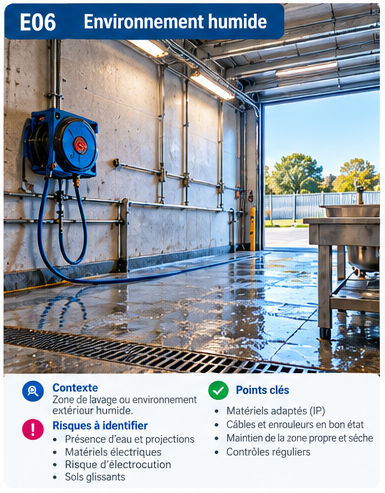
E06 · Zone de lavage — Projections d’eau, enrouleur, sol humide.
Schémas
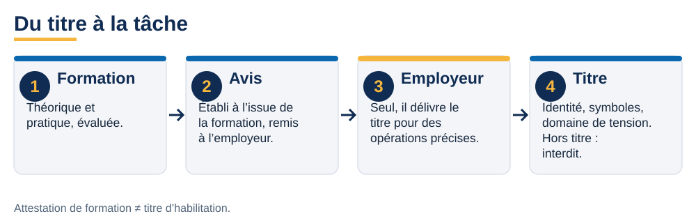
F05 · Du titre à la tâche — La formation donne un avis ; l’employeur délivre le titre.
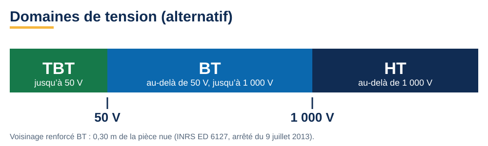
F06 · Domaines de tension — TBT, BT, HT en alternatif.
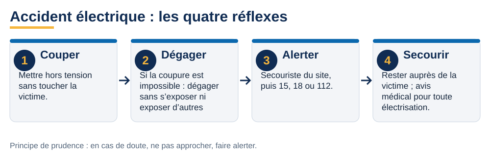
F01 · Accident électrique : les quatre réflexes — Couper, dégager, alerter, secourir.F02 · Incendie d’origine électrique — Cinq réflexes, pas d’eau sur une installation sous tension.
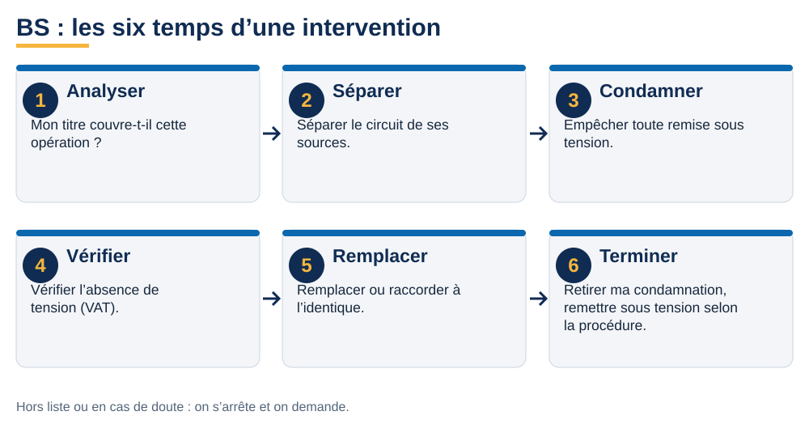
F03 · BS : les six temps — Analyser, séparer, condamner, vérifier, remplacer, terminer.
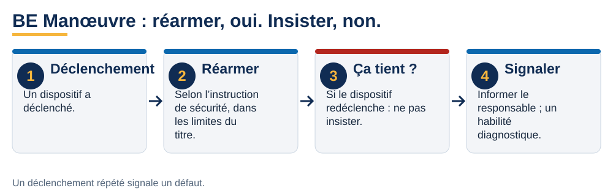
F04 · BE Manœuvre : réarmer, oui, insister, non — Un déclenchement répété signale un défaut.V22 · Contact direct et contact indirect — Deux mécanismes de choc électrique.V21 · Défaut d’isolement : danger de contact indirect — Schéma de défaut, sans simulation de geste.
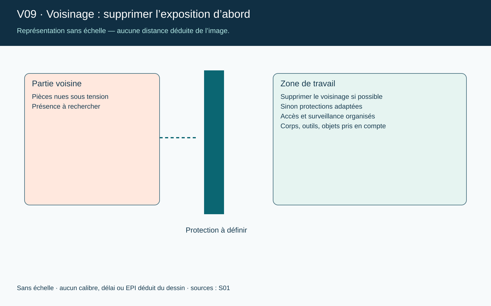
V09 · Voisinage : supprimer l’exposition d’abord — Sans échelle : aucune distance déduite de l’image.
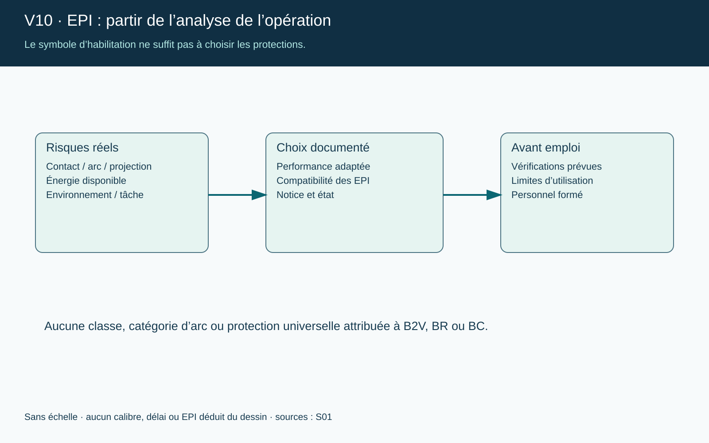
V10 · EPI : partir de l’analyse de l’opération — Le symbole ne suffit pas à choisir les protections.
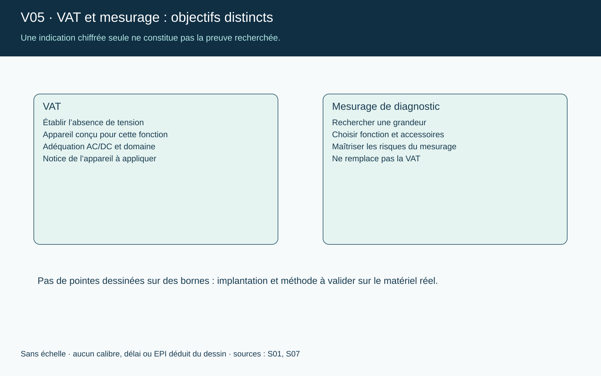
V05 · VAT et mesurage : objectifs distincts — Une indication chiffrée seule ne prouve pas l’absence de tension.
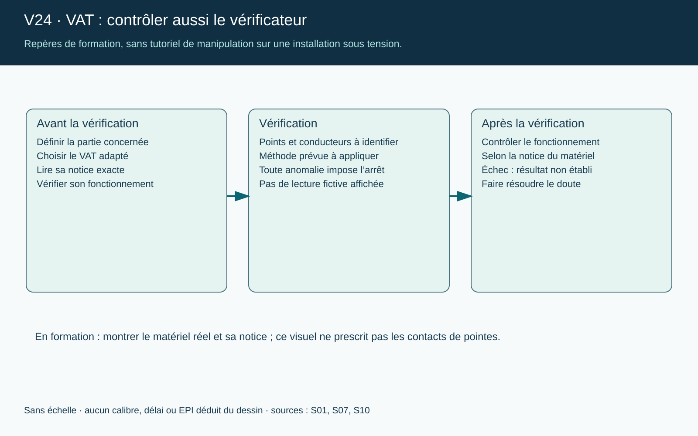
V24 · VAT : contrôler aussi le vérificateur — Avant et après la vérification.
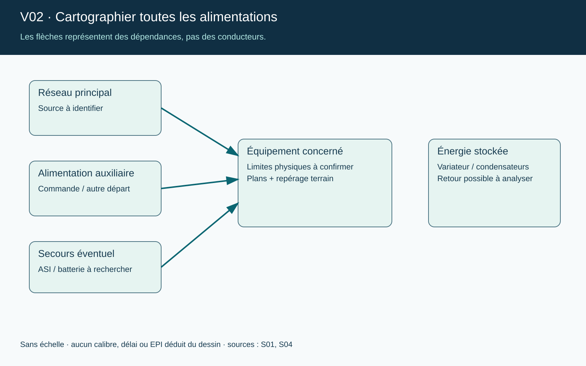
V02 · Cartographier toutes les alimentations — Les flèches représentent des dépendances, pas des conducteurs.
Planches et illustrations
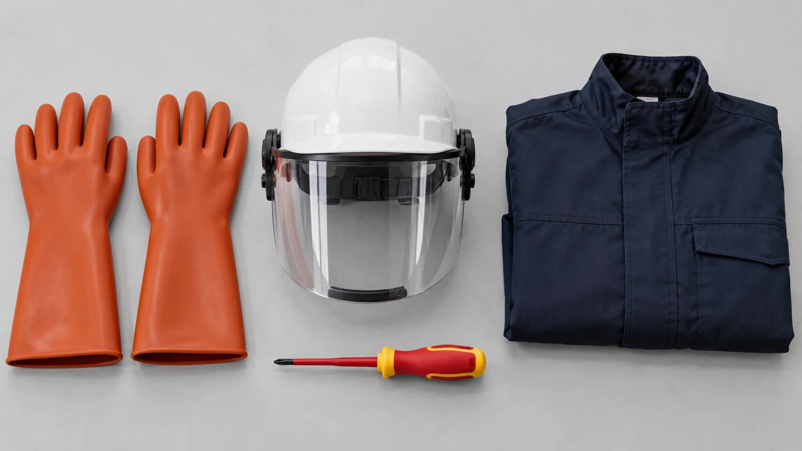
Équipements de protection (illustration) — Objets illustrés sans performance attestée : ce n’est pas un kit universel.
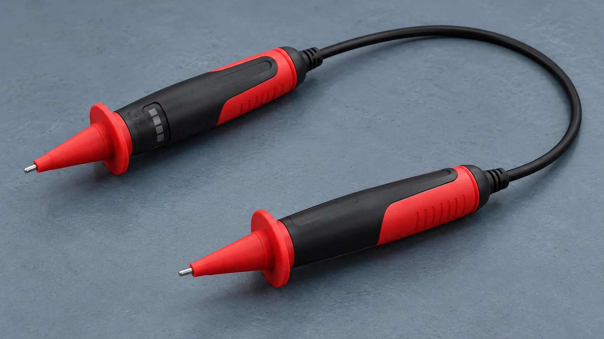
Vérificateur bipolaire (illustration) — La fonction VAT n’est pas la fonction de mesurage.
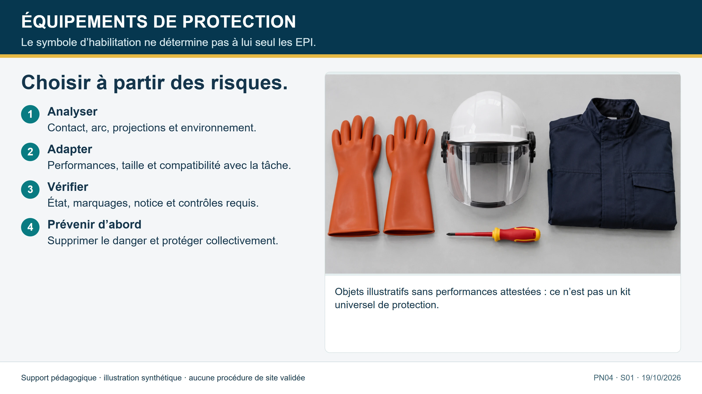
Choisir les protections à partir des risques — Le symbole d’habilitation ne détermine pas seul les EPI.
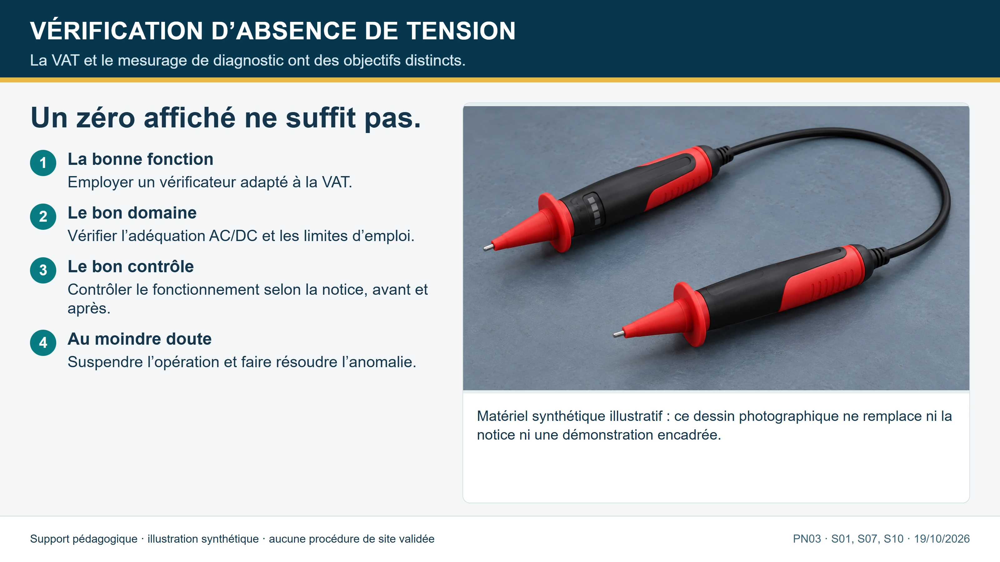
Vérification d’absence de tension — La VAT et le mesurage ont des objectifs distincts.